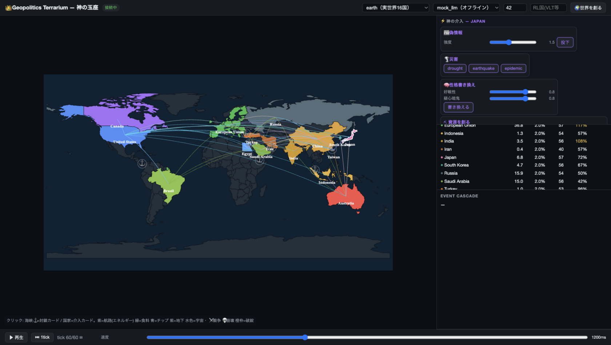
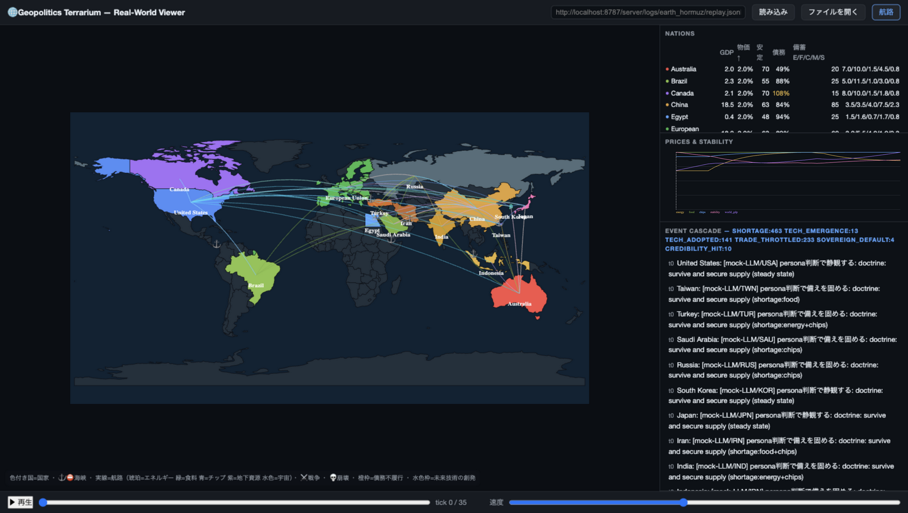
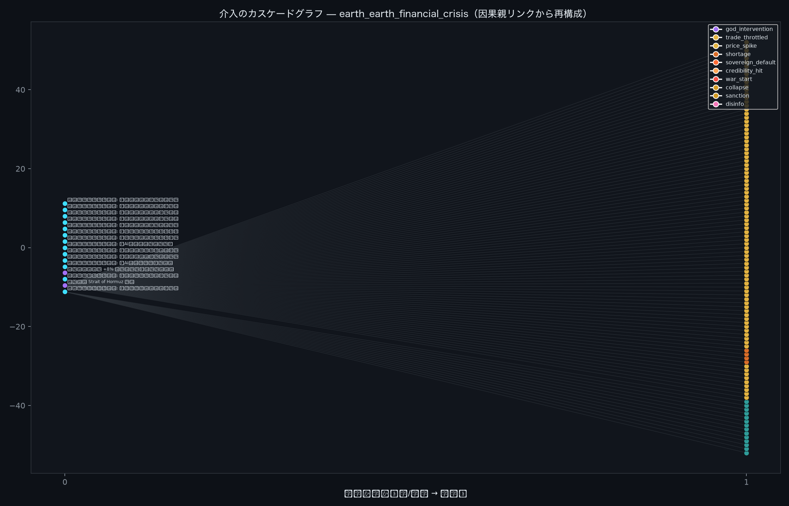
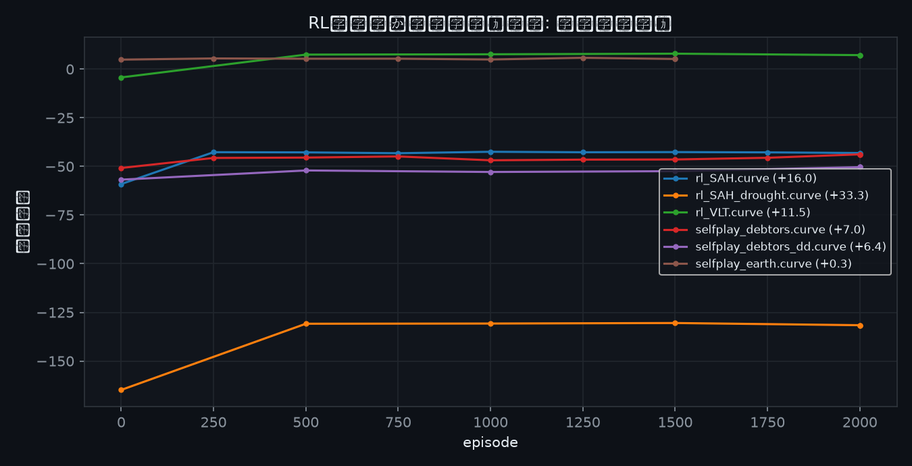
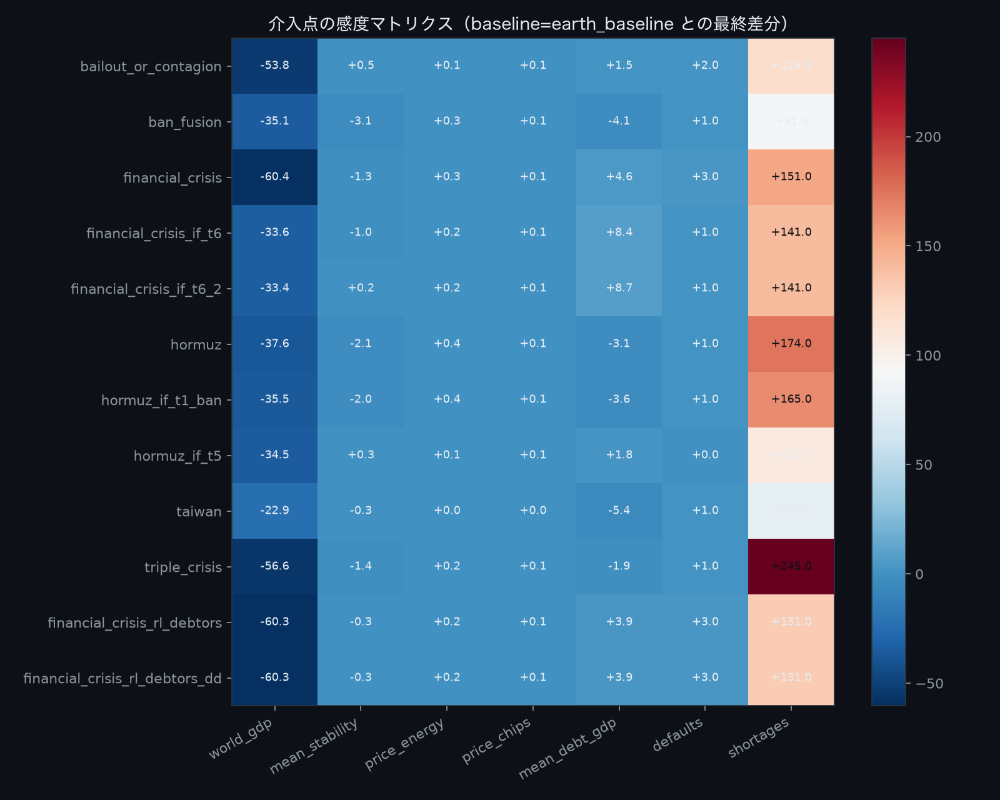

〜神の地政学とバタフライ・エフェクト〜
実世界地図上の国家AIたちに「神」として介入し、サプライチェーンの連鎖反応が 世界をどう変えるかを観測する非対称安全保障サンドボックス
複合戦略AI: LLM（戦略層・z.ai GLM） × 強化学習（戦術層・自己対戦） × ルール（世界解決層）
第2回 AIエージェント社会シミュレーション・ハッカソン「メタ安全保障」応募作品
(seed, preset, policy, scenario) → bit等価（テスト担保）
ライブ介入UI「神の玉座」（国家選択で介入カードが出現）
| 層 | 担当 | 実装 |
|---|---|---|
| 戦略層 | 外交・軍事姿勢・配給判断、自然言語の理屈 | LLM（z.ai GLM、OpenAI互換） |
| 戦術層 | 毎月の予算配分・姿勢・配給 | 強化学習（numpy Actor-Critic、自己対戦） |
| 世界解決層 | 市場・物理・財政・連鎖 | 決定論ルールエンジン |
技術ステップ → 生産 → 貿易（比例配給） → 市場 → 消費 → 意思決定（AI） → 外交 → 紛争 → 財政・マクロ

リプレイビューア: 実世界地図・航路・価格・イベントカスケード
create_resource / destroy_resource で神が需給構造そのものを書き換え| 分類 | 技術（創発時期） | 効果 |
|---|---|---|
| 兵器 | 自律ドローン群(t8)・極超音速迎撃網(t22) | 軍事力増強・不信上昇 |
| 製造 | AI設計ファブ(t10)・自己修復工場(t26) | 生産倍率向上 |
| 資源 | 核融合(t20)・宇宙太陽光(t24)・小惑星採掘(t30) | 油田ゼロの国にも電力 |
| 宗教 | AI神格宗教(t15)・テクノ・ナショナリズム(t18) | 安定↑・他国との信頼↓ |
導入確率は研究吸収能力（GDP・金融・半導体備蓄）に比例 → 技術格差が創発的に生成。
神は grant_tech / ban_tech で技術ツリー自体を介入できる。
| シナリオ（seed=42・同世界・36ヶ月） | 世界GDP | エネルギー価格 | 半導体価格 | デフォルト | 不足 |
|---|---|---|---|---|---|
| baseline（無介入） | 200.1 | 1.00 | 1.00 | 0 | 326 |
| ホルムズ海峡封鎖 | 147.0 (−26.5%) | 1.50 | 1.31 | 1 | 490 |
| 三重危機（ホルムズ+台湾+スエズ） | 118.8 (−40.6%) | 1.60 | 1.60 | 1 | — |
| 金融危機（封鎖+世界金利+8%） | 136.7 (−31.6%) | 1.26 | 1.08 | 4 | — |
| 金融危機 + 日・エジプト救済（A/B） | — | — | — | 3 | — |

金融危機シナリオの因果グラフ（左=原因、右=結果。赤=破綻、橙=戦争、黒=崩壊）
| tick | 国 | 利率 | 原因（親イベント） |
|---|---|---|---|
| t7 | 日本 | 10% | 封鎖→輸入インフレ→金利上昇 |
| t12 | EU | 19% | 日本債の credibility_hit から感染 |
| t20 | 日本（再） | 24% | 信用毀損の残存 |
| t22 | 米国 | 13% | 感染チェーンの終端 |
parents リンクをBFSで辿り、介入→子孫イベント数を定量比較
（analysis/out/cascade_bar_*.png）。どの介入がどれだけの連鎖を生んだか一行で読める。

--default-penalty で「成長最適化⇔債務規律」を切替→ 戦術層（国家AI）・戦略層（LLM）・神（プレイヤー）の3階層のうち、 構造的危機を断てるのは神の介入のみ — 本作テーマの裏付け。
実行完了後に引用を挿入（earth_llm_hormuz 実行ログより）
analysis/terrarium_analysis.ipynb（実行結果埋込済み・ログのみから再現）server/logs/*/（events.jsonl / series.csv / run.json / replay.jsonl）server/models/
介入点×指標の感度行列（baseline差分）— make_figures.py が自動生成
| 介入点 | 観測された連鎖 | 教訓 |
|---|---|---|
| 海峡封鎖（物理） | エネルギー+50% → ファブ電力不足 → 半導体+31% → GDP −26.5% | 1点の介入が複数商品に伝播 |
| 世界金利（金融） | 債務国の利払い急増 → 破綻 → 債権国へ感染（4件連鎖） | 金融感染は封鎖と異なる被害構造 |
| ベイルアウト（金融・神） | 破綻4件→3件（A/Bで計測） | 最後の貸し手の効果が定量できる |
| 技術の禁止/授与（創発） | 核融合禁止で海峡ショック吸収が消失（1.05→1.35） | 未来技術が地政学依存をリセット |
| RL報酬設計（AI） | 予算ドクトリンは変わるが構造的危機は不変 | 階層が違う介入は代替できない |
⚠️ 本シミュレーションは公開されている概算データに基づく中立・分析目的のものです。 特定の国・個人の標的化を意図するものではありません。地図データはNatural Earth（パブリックドメイン）を使用しています。